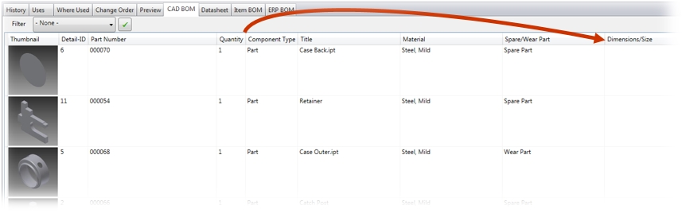

Previous
Next
Previous
Next 
|
||||
|
|
||||
Vault Quickstart offers a tab to
display and export CAD BOMs from 3D CAD Data (Inventor,
SolidWorks)
With this extension you will be able to:
Download: Available soon
|
||||
Display
The display of the BOM is limited to assemblies
(IAM, SLDASM), because only these files store BOM information in
Vault during checkin.
All columns can be ascending or descending
sorted. When refreshing the display the order will be reset to the
initial order.
The order of columns is freely changeable, but
only valid in the current session of the program.

Note: The field Detail-ID will only been
populated when the structured BOM is active in Inventor.
Filter
Vault Quickstart has defined filters for spare
and wear parts and cutting materials.
Select a filter and activate it with the button
.
Virtual Components
CAD-BOM view reflects only components with
existing files, so Virtual components are not displayed and prevent
to display the BOM in the standard Vault Data Standard
Configuration. In the Quick Start configuration we filter the
Virtual components to be able to display the BOM:
|
||||
A CAD BOM can be saved or printed on a report
template in PDF, Word or Excel.
Quick Start has included 3 templates matching the
3 filter values. Depending on the filter, the respective template
is selected.
General Example - unfiltered CAD BOM
Afdruken
Print preview
Save as -> PDF, Word, Excel
Spare parts / Wear parts lists
Select the appropriate filter to export this type
of list. The preview shows the filtered list. Only the components
with these property values will be listed.
Cut list
The report groups the raw material by part number
/ length. The rollup of the quantity and length is made following
the combination Part number / length. Other rollup conditions can
be configured in the report templates if needed.
|
||||